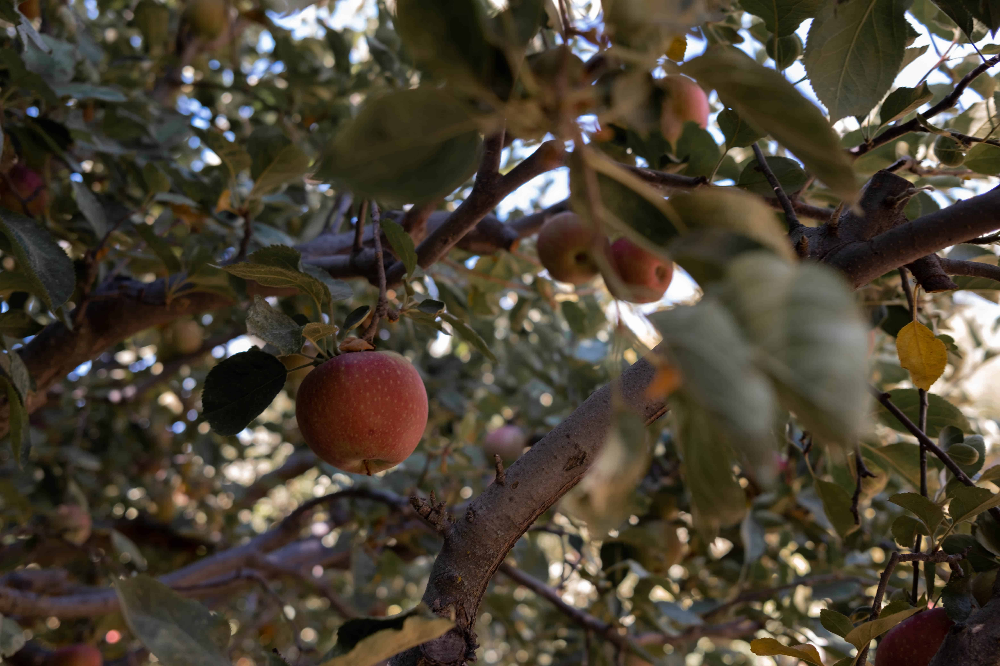
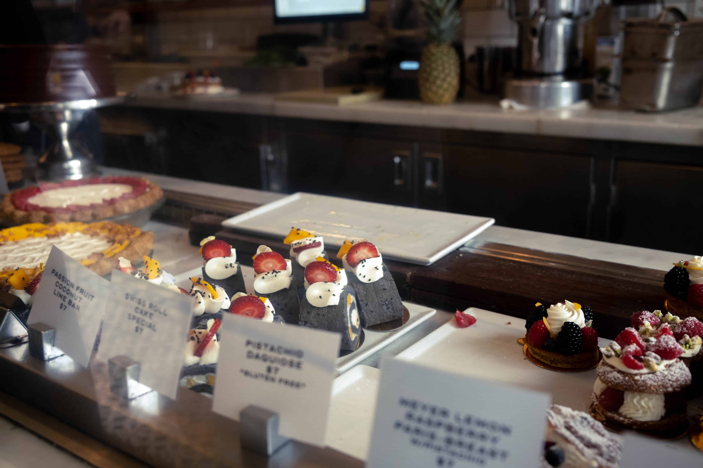
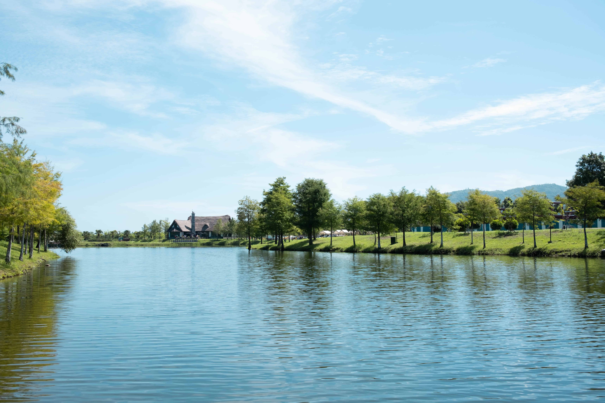
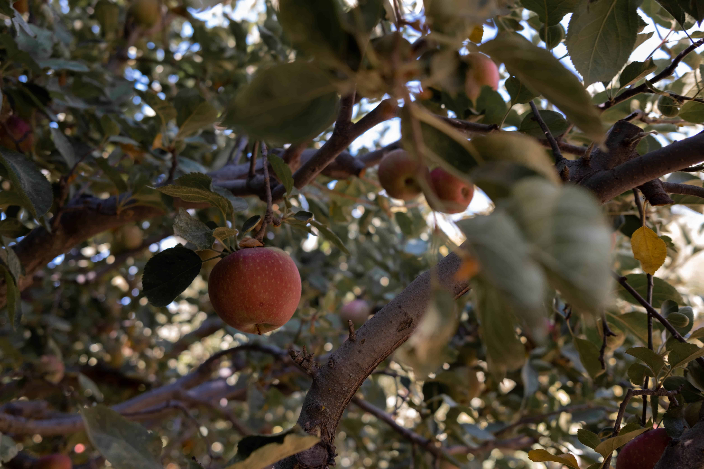
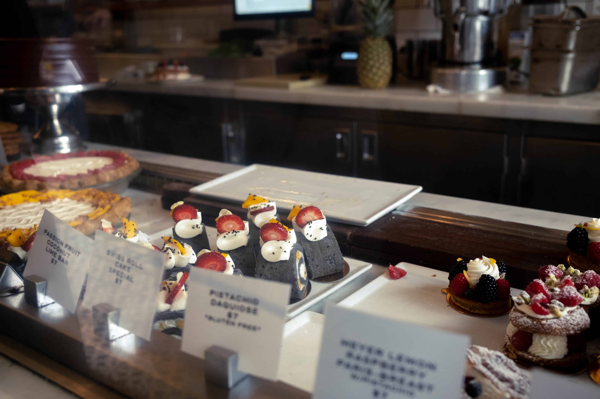
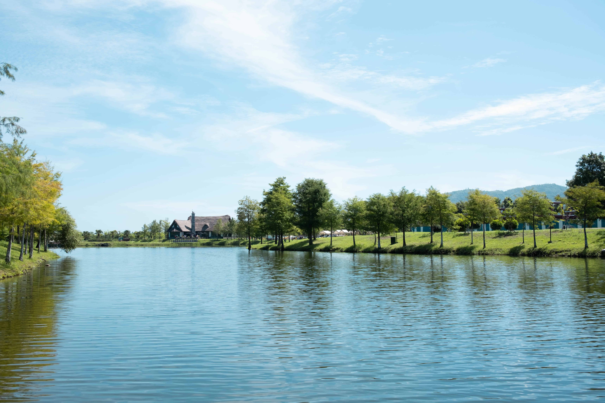

Hello! I'm Chiayu Lin, a web developer and blogger from sunny SoCal. I love bringing ideas to life, whether it’s a website or a dynamic app. Fluent in Mandarin(中文) , English, and Japanese(日本語), I bring a global perspective to each project, aiming to craft designs that connect with everyone.
When I'm not coding, you'll probably find me dancing to J-pop/K-pop, traveling, or hunting down new food spots. From building custom WordPress themes to creating interactive tools, I’m all about design, detail, and making sure every user experience is smooth.
Blog
Custom WordPress Theme: Built a unique theme from scratch, emphasizing mobile-first design, responsive layouts, and SEO. Used HTML, CSS, JavaScript, and PHP for optimal performance and accessibility.
- PHP
- HTML
- CSS
- JavaScript
Tetra Tech
Ensured website functionality and consistency through rigorous quality testing, aligned with SEO and WCAG standards, to improve user experience.
- Wordpress
- Elementor
- CSS
- SEO

Boba Finder
A location-based app that helps users discover boba tea shops via zip code, integrating Google Maps API for real-time information, photos, and reviews.
- HTML
- CSS
- JavaScript
- AJAX

Go TO JAPAN
A travel itinerary planner for Japan-bound travelers. Users can search destinations by area, category, or keywords, and customize their itinerary on an interactive map.
- React.js
- JavaScript
- Node.js
- PostgreSQL